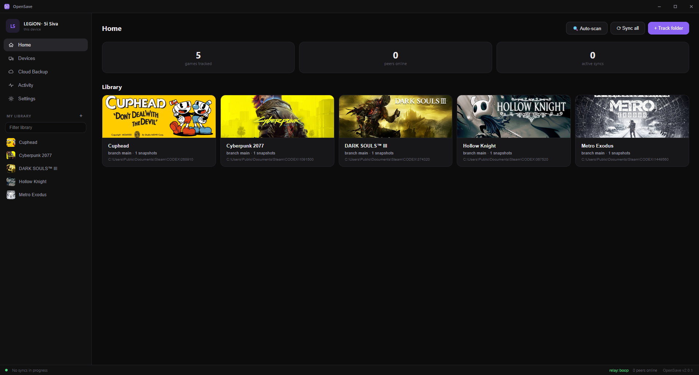
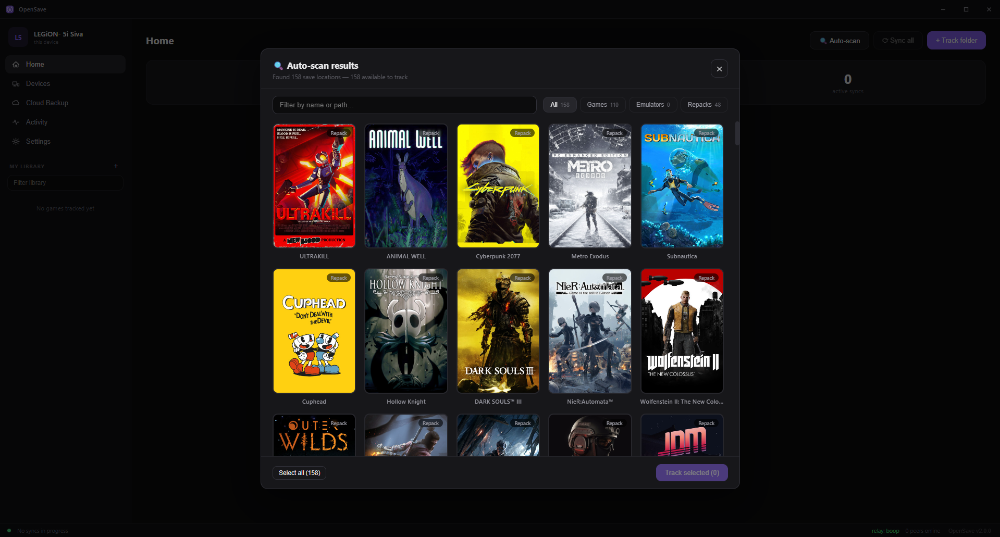
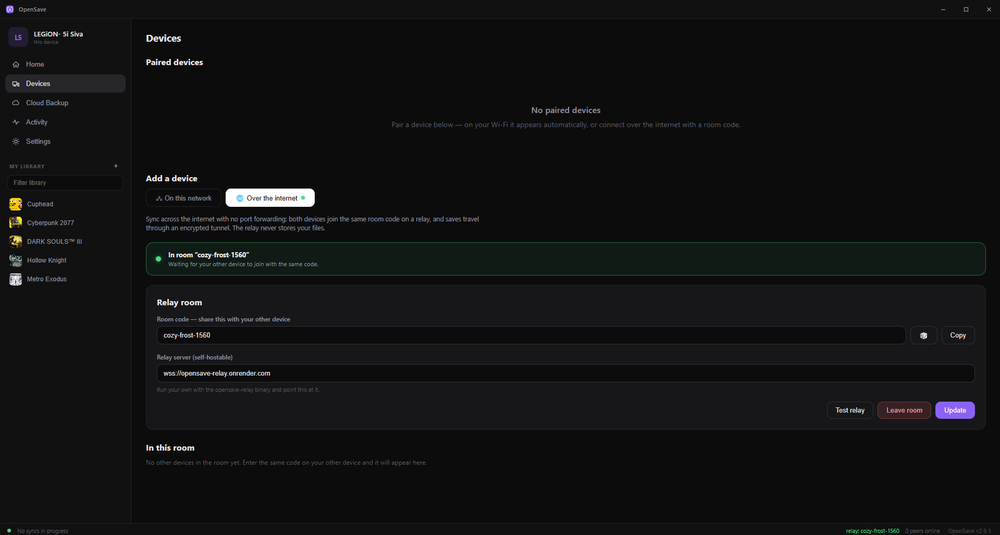
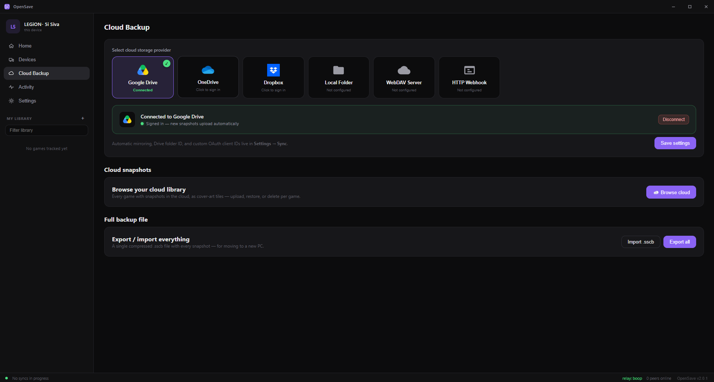

OpenSave syncs your saves between devices, peer‑to‑peer. Emulators, GOG, Epic, mods, that one indie gem with no cloud support — point OpenSave at a save, pair your devices, and your progress follows you everywhere. No accounts. No subscriptions. No telemetry.

Your whole save library as cover-art tiles. Click any shot to zoom in.

Auto-scan turned up 158 games on a fresh machine here — Steam, repacks, emulators, GOG, Epic — each with real cover art. Backed by a 20,000+ game index that works fully offline.

Same Wi-Fi? Devices find each other. Across the internet? Share a room code — no port forwarding, no static IP.

Mirror snapshots to Google Drive, Dropbox, OneDrive, WebDAV, or a local/NAS folder. Off by default — P2P needs no cloud at all.
Steam Cloud only covers games bought on Steam — and only when the developer opts in. Everything else is a folder you have to remember to copy.
AppData folders over USB or chat appsBuilt by gamers tired of losing progress — every feature exists because a save was once lost without it.
A community-maintained save-location index (from PCGamingWiki) ships inside the app, so scanning is instant and fully offline. Steam, GOG, Epic, itch, emulators, and repack/cracked installs alike — shown as cover-art tiles, one click to track.
Any folder or single file can be a "game". Watched live with safe-write-aware detection, so OpenSave never grabs a half-flushed save mid-write.
Saves are chunked and SHA-256 hashed (64 KB–2 MB adaptive blocks). Only the blocks that changed ever travel — and large files stream from disk, so a 4 GB save moves with almost no memory.
Devices find each other automatically on your network. Remote? Share a relay room code — no port forwarding, no static IP. Every pairing is explicitly approved on both ends.
Every change becomes a versioned snapshot. Roll back a whole save or a single file. Branches keep parallel playthroughs — and conflict resolutions — safe forever.
Diverged saves are detected by a shared merge base — the exact state both devices last agreed on, like git — not by clocks that lie. Keep yours, keep theirs, or keep both. Nothing is ever silently overwritten.
An official Flatpak runs on stock SteamOS, Proton prefixes and emulator saves are auto-found, and there's a system tray on both Linux and Windows. Play on the couch, continue at the desk.
Mirror snapshots to Google Drive, Dropbox, OneDrive, WebDAV, a webhook, or a local/NAS folder — with resumable uploads for big saves. Optional, off by default.
One-click update from GitHub releases — or pull a newer build straight from a paired device. Your fleet stays current without touching a browser.
A local-first pipeline that treats your saves like source code: hashed, versioned, and merged with intent.
A filesystem watcher notices the instant a game writes its save — lock-guarded and safe-write aware, so partial writes are never captured.
The save is chunked into content-defined blocks and SHA-256 hashed. A manifest diff pinpoints exactly which blocks changed.
The new state is recorded as an immutable, versioned snapshot on a branch — your undo button for every save, forever.
Only changed blocks travel to paired peers — direct over LAN, or through a stateless relay that routes encrypted frames and stores nothing.
The relay is a stateless room broker — it forwards encrypted WebSocket frames and never sees or stores a save. Don't want to trust ours? Self-host it with one binary or a Dockerfile.
Prefer a terminal? The headless daemon + opensave-cli runs on servers and Steam Deck alike, and everything the app does is scriptable over a local REST/WebSocket API.
OpenSave is MIT-licensed and developed in the open — a single small native binary in Go with an embedded UI. No Electron, no runtime to install, no account to create.
~/.opensave/ — your data in an open formatWindows, Linux, and Steam Deck. One small binary — install in seconds.
Runs in the tray, updates itself, and can start with Windows. Not sure? The installer's the easy choice.
OpenSave.Setup.exe · OpenSave.exeSingle tarball or an official Flatpak. Extract and run — no dependencies, no sandbox headaches.
Download for Linux opensave-linux-amd64.tar.gz · FlatpakInstall the Flatpak in Desktop Mode — it runs on stock SteamOS and finds your Proton saves automatically.
Get the Flatpak runs on stock SteamOSUpgrading from OpenSave 1.x? Your tracked games, snapshots, pairings, and settings migrate automatically on first launch — and 1.x and 2.x devices can pair and sync with each other during the transition.
No. Devices sync directly with each other. The optional relay only matters when syncing across the internet — and you can self-host it with a single binary.
Yes — free and MIT-licensed open source. No pro tier, no subscription, no ads, no telemetry. It exists because game saves shouldn't be hostage to a storefront.
OpenSave records the exact state both devices last agreed on — a shared merge base, like git — and flags a conflict only when both sides changed relative to it. Then it asks what you want: keep yours, keep theirs, or keep both on a new branch. It never silently overwrites a playthrough.
Yes — that's the point. It uses a 20,000+ game save-location index, so RetroArch, Dolphin, Ryujinx, yuzu, Citra, PCSX2, RPCS3, PPSSPP, Cemu, GOG, Epic, itch, and Goldberg-style repacks are auto-detected. Anything else can be tracked by pointing at its folder or file.
Yes. There's an official Flatpak that runs on stock SteamOS in Desktop Mode. It automatically finds saves inside Proton prefixes (where most Deck games store them) along with native Linux and emulator saves.
WAN sync travels as encrypted WebSocket frames through a stateless relay that routes and stores nothing. On LAN, devices talk directly. Saves are only ever persisted on your devices (and, if you enable it, your own cloud storage).
Yes. The headless daemon + opensave-cli covers scan, add, status, snapshot, rollback, branch, and checkout — ideal for servers, NAS boxes, and scripts. Everything is also drivable over a local REST/WebSocket API.